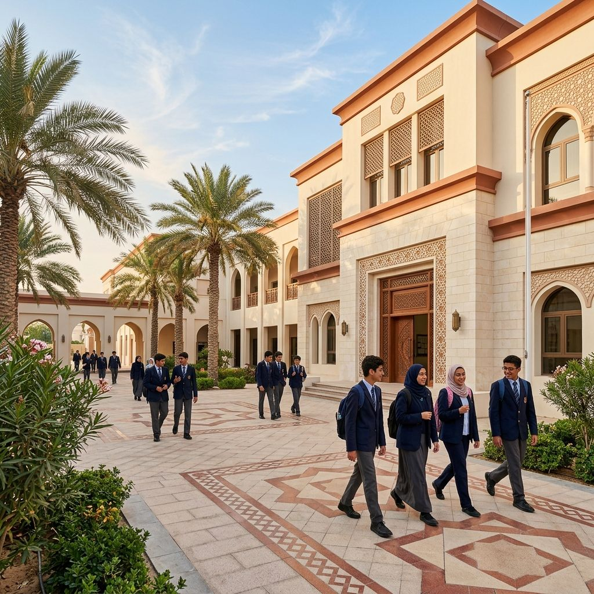

٠١01

القطاع الخاصPrivate sector
للمدارس الخاصة
For Private Schools
تبحث المدرسة عمَّا يميّزها ويرفع نتائج طلبتها معًا، وضعف القرائية من أكثر ما يقلق أولياء الأمور.
Private schools seek both distinction and stronger outcomes; weak literacy is among parents' greatest concerns.
منهجٌ قرائيٌّ متدرّج جاهز التطبيق يوفّر عناء التأليف والضبط، ويُدمَج مع منهجك القائم لا ليزاحمه؛ ومع لوحات المتابعة تتحوّل القرائية من هاجسٍ إلى ميزةٍ تسويقية ملموسة.
A ready, graded literacy curriculum that spares authoring and levelling and integrates with your existing programme rather than competing with it; and with tracking dashboards, literacy turns from a worry into a tangible competitive advantage.
احجز جلسة تعريفية لمدرستك ←Book a session for your school →